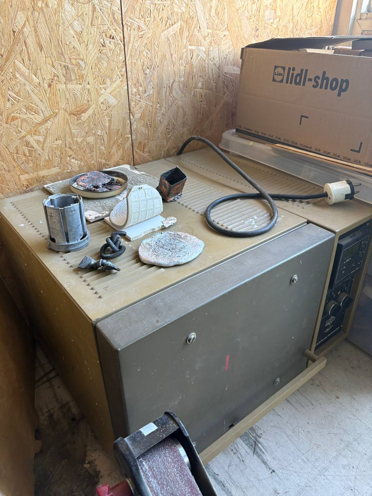
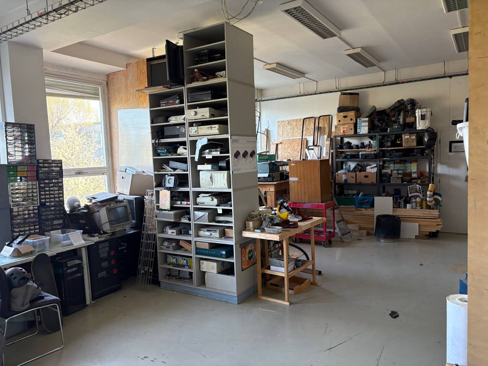

Šel jsem do FutLabu. To je taková ta sdílená dílna s 3D tiskárnami a laserem v areálu Eclipse pod Olšanskými hřbitovy. Otevírají ve dvě, přišel jsem včas, všechno v pohodě.
Jenže vedle FutLabu, ve stejné budově, je dveře. Žádná cedule, žádný Instagram, žádný otevírací doba na Google Maps. Jen nálepka brmlab a zvonek.
Zazvonil jsem.
Co je brmlab
Pražský hackerspace. Existuje od roku 2010. Neplatíte vstup, neregistrujete se online, nepodepisujete NDA. Přijdete, zazvonite, a pokud je někdo uvnitř, pustí vás. To je celý onboarding.
Oficiální stránka říká „otevřeno, když je člen uvnitř“. Nejspolehlivěji v úterý večer. Já přišel ve čtvrtek odpoledne a měl štěstí.
Uvnitř
Takový sklad, plný oscilloskopů, pájecích stanic, 3D tiskáren, soustruhu, a v rohu stojí muflová pec. Taková ta zelená, východoevropská, co vypadá jako by v ní dříve tavili součástky pro Trabant. Zvládne 1300 stupňů. Na vrchu leží zbytky kelímků a drobné odlitky — používají ji na odlévání kovů.

Muflová pec. 1300 °C. Na vrchu zbytky kelímků a odlitků.
Několik místností, každá jiný svět. Elektronika. Mechanika. 3D tisk. Všechno polepené nálepkami, propojené kabely, a nikde ani stopa po korporátním designu. Žádný branding. Žádný merch. Žádný pitch deck na stěně.

Několik labů v jednom prostoru. Žádný design, zato všechno funkční.
Prostě místo, kde lidi dělají věci rukama, protože je to baví.
Proč je to důležité
V Praze je spousta co-workingů s bezdrátovými sluchátky a ovesným mlékem. Míst, kde si můžete za 150 korun na hodinu pronajmout laser, je taky pár. Ale místo, kam prostě přijdete a někdo vám řekne „hele, tam v rohu je pájka, tady máš cín, dělej co chceš“ — to je vzácné.
brmlab nemá otevírací dobu, protože to není byznys. Je to komunita. Funguje na principu, že když jste uvnitř, zamknete za sebou. Když odcházíte, zamknete za sebou. A když se vám něco rozbije, opravíte to. Nebo to necháte ležet a opraví to někdo jiný příští úterý.
V době, kdy je všechno optimalizované na konverze a engagement, je až osvěžující narazit na místo, jehož celá marketingová strategie spočívá v jedné nálepce na dveřích.